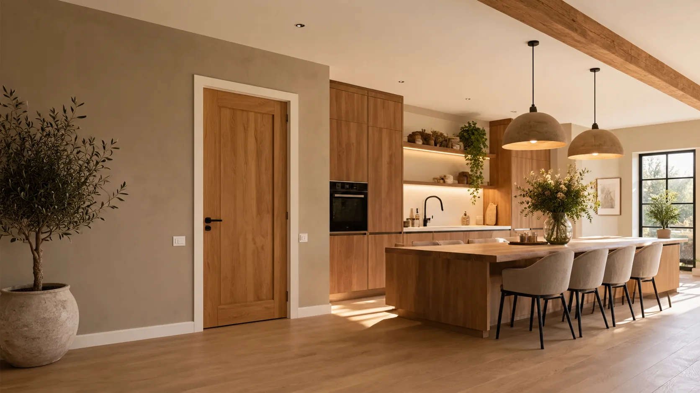

RENOVATIE · TIMMERWERK · MONTAGE
Vakwerk voor elke ruimte.
Van keukenmontage en timmerwerk tot renovaties, vloeren en tuinwerk. De Jongh Allroundservice helpt bij uiteenlopende klussen in en om het huis.
Persoonlijk contactVeelzijdig inzetbaarGouda en omgeving
WAT KAN IK VOOR U BETEKENEN?
Alles voor uw woning, van klein herstel tot grote plannen.
Niet elke klus past in één hokje. Daarom kunt u bij De Jongh Allroundservice terecht voor een breed aanbod aan werkzaamheden.
Bekijk alle werkzaamheden Keukens & montageKeukens demonteren, monteren en netjes afwerken.
Keukens & montageKeukens demonteren, monteren en netjes afwerken. Timmerwerk & afwerkingDeuren, wanden, plafonds, maatwerk en meer.
Timmerwerk & afwerkingDeuren, wanden, plafonds, maatwerk en meer. Vloeren & afwerkingLaminaat, egaliseren en vloerwerk.
Vloeren & afwerkingLaminaat, egaliseren en vloerwerk. Tuin & buitenwerkVlonders, veranda’s, schuttingen en bestrating.
Tuin & buitenwerkVlonders, veranda’s, schuttingen en bestrating. Renovatie & verbouwingEen nieuwe indeling of een complete renovatie.
Renovatie & verbouwingEen nieuwe indeling of een complete renovatie. Onderhoud & reparatiesVan kleine herstelwerkzaamheden tot montage.
Onderhoud & reparatiesVan kleine herstelwerkzaamheden tot montage.DE JONGH ALLROUNDSERVICEBespreek uw plannen ↗
Eén aanspreekpunt voor uw klus.
Joshua de Jongh helpt bij renovatie, montage en onderhoud. Van het bespreken van uw wensen tot de uitvoering en afwerking.
Veelzijdige werkzaamhedenBinnen en buiten uw woning.
Direct contactBespreek uw klus rechtstreeks.
Praktisch meedenkenEen passende aanpak voor uw project.
EEN KLUS OP DE PLANNING?
Vertel Joshua wat u wilt aanpakken.
Een kleine reparatie, een nieuwe keuken of een grotere renovatie: neem contact op om de mogelijkheden te bespreken.